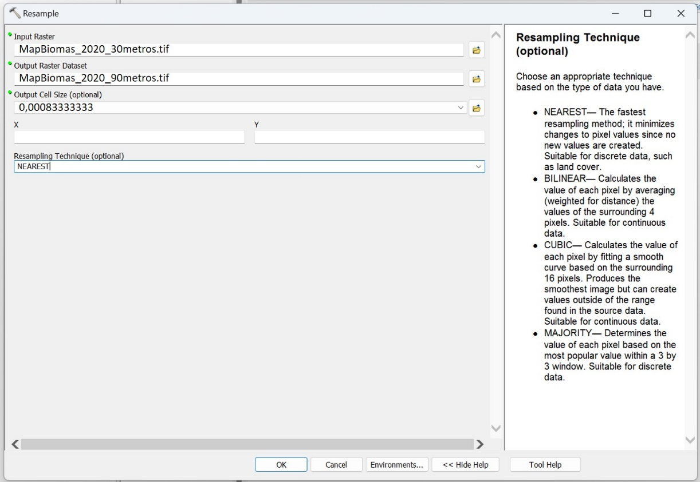
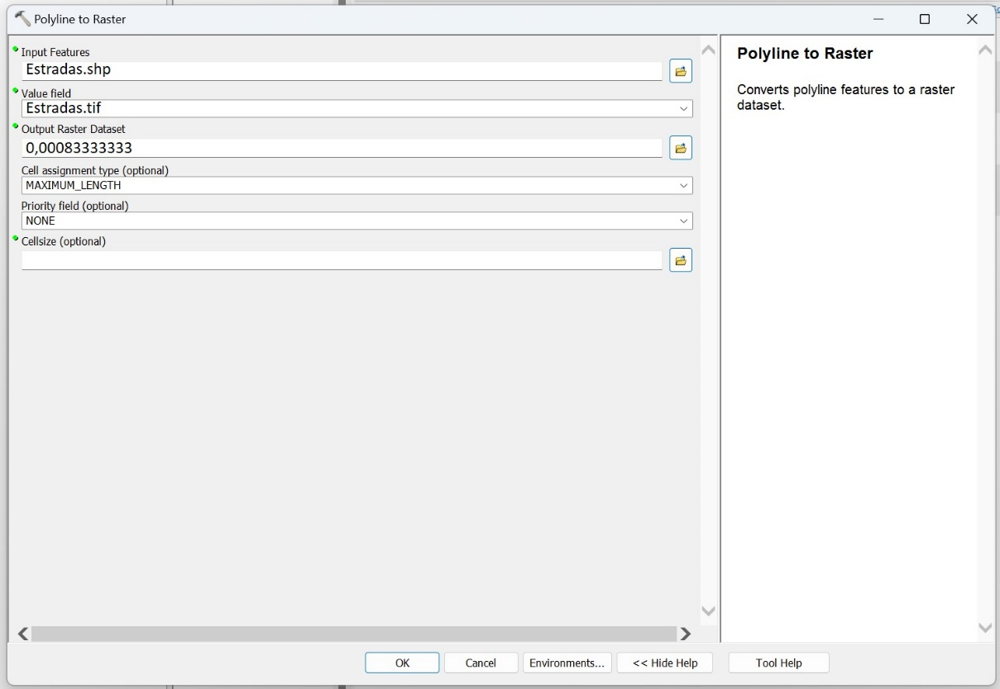
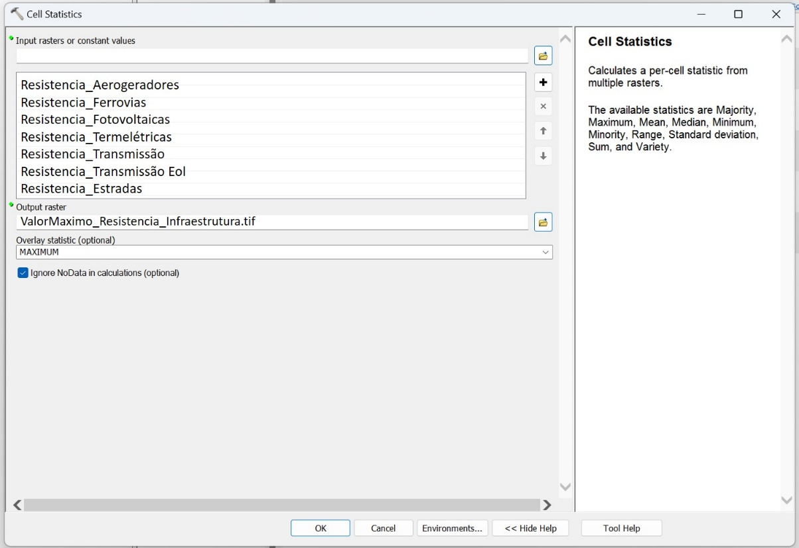
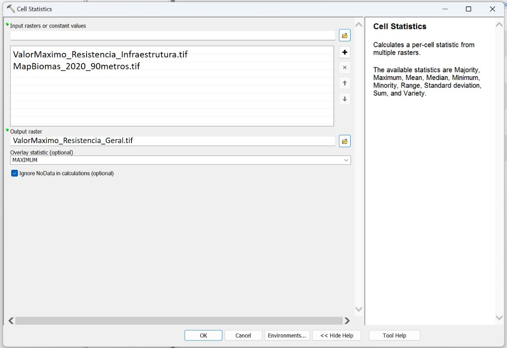
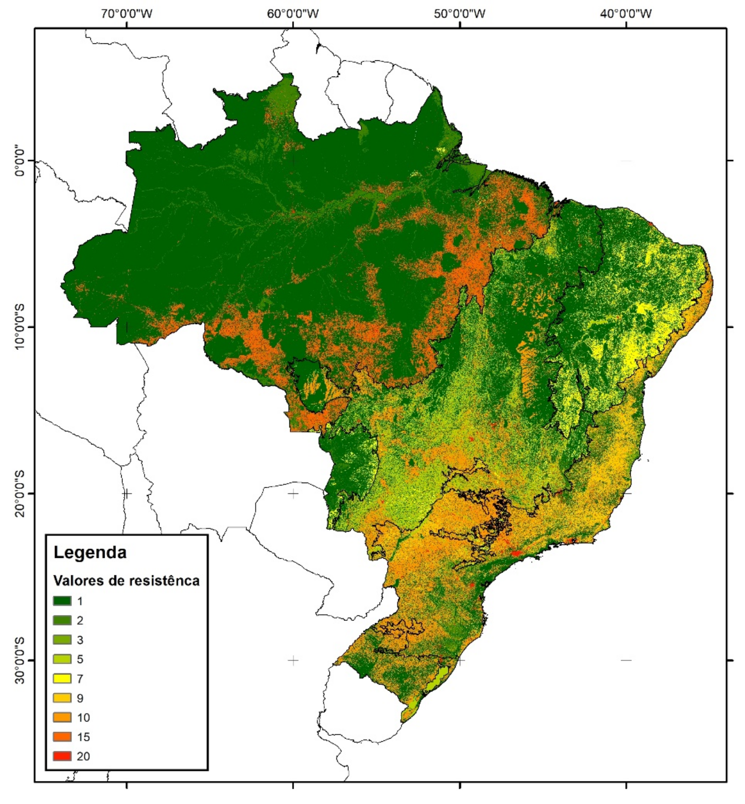

Resistência do uso e ocupação do solo
As áreas resilientes às mudanças climáticas são classificadas por dois eixos, (1) a heterogeneidade da paisagem e (2) conectividade local. A conectividade local é calculada sobre uma superfície de resistência ao movimento dos organismos na paisagem. Essa superfície representa pesos aos usos e coberturas do solo, sendo as coberturas naturais aquelas com menor resistência e as superfícies antropizadas, com maior diferença estrutural para as coberturas nativas (ex. áreas urbanas), as de maior resistência.
Base de Dados
A superfície de resistência foi calculada usando como base os dados de cobertura do solo fornecida pelo MapBiomas coleção 7.0 para o ano de 2020 (MapBiomas Project 2020). Sobre essa camada adicionamos informações sobre presença de infraestruturas de transporte e de energia. Utilizamos a base de estradas pavimentadas e não pavimentadas, ferrovias e linhas de transmissão de energia fornecida pelo Instituto Brasileiro de Geografia e Estatística (IBGE) [BCIM250, 2021]. As bases de aerogeradores, centrais geradoras de energia fotovoltaicas, linhas de transmissão de energia eólica e usinas termelétricas foram adquiridas da Agência Nacional de Energia Elétrica (ANEEL) (https://gisepeprd2.epe.gov.br/WebMapEPE/).
Software
A bases de dados de uso e cobertura do solo, transporte e energia foram harmonizadas, atribuídos pesos e combinadas para formarem a superfície de resistência. Essas análises e processamentos foram realizados no ArcGis 10.5 (citar arcgis). Em seguida descreveremos a implementação da metodologia para a sua reprodutividade.
Reamostragem do MapBiomas
As análises de mapeamento das áreas resilientes às mudanças climáticas estão na resolução espacial de 90 metros. Desta forma, reamostramos os dados do MapBiomas, que estão na resolução de 30 metros, para uma resolução de 90 metros. A reamostragem foi realizada pelo método de vizinho mais próximo (nearest neighbor) já que essa superfície é composta por 27 valores categóricos do uso e cobertura do solo. O método de reamostragem foi realizado pelo seguinte caminho ToolsBox > Raster > .... Em Resample, entramos o raster original do MapBiomas em Input Raster, atribuímos um nome para Output Raster Dataset e a nova resolução em Output Cell Size (optional) (0.00083333333). A resolução foi calculada … Escolhemos o método NEAREST em Resampling technique (optional) (Figura 1).

Dados vetoriais em raster
Os dados vetoriais de infraestrutura foram convertidos para raster, com pixels de tamanho aproximado de 90 m (Figura 2) e, posteriormente, agrupados em um único arquivo matricial. A conversão foi realizada para cada arquivo usando a ferramenta Polyline to Raster, no seguinte caminho Tools > XX > XX > XX. Introduzimos o arquivo de entrada em Input Features, atribuímos o nome do output em Value field, a resolução espacial (0.00083333333) em Output Raster Dataset. Em Cell assignment type (optional) selecionamos MAXIMUM_LENGTH para o valor da maior estrutura ser o atribuído ao pixel, quando houver mais de uma estrutura por pixel.

Nas situações em que havia sobreposição entre pixels de infraestrutura, sempre prevalecia o valor do pixel com resistência mais alta (superfície com valores de resistência máximos – Figura 3), conforme descrito abaixo.

Conjugamos, por álgebra de mapas, as bases matriciais do MapBiomas e de infraestrutura do IBGE e ANEEL, de tal maneira que, nas sobreposições entre a base do MapBiomas e a de infraestrutura, sempre prevaleceu o pixel com o maior valor de resistência (Figura 4).

Feita esta operação, obtivemos uma nova superfície de cobertura do solo composta pelas classes originais do MapBiomas mais as classes de infraestrutura, somando 34 classes distintas (Tabela xx). Em um primeiro momento, consideramos os corpos d’água (ou águas abertas) como uma única classe, sem distinção de largura. Essa informação foi inserida nos passos que seguem, conforme será visto abaixo. [INSERIR TABELA COM AS CLASSES OBTIDAS ATÉ O MOMENTO]
Indicação de valores de resistência por classe
As 34 classes do mapa consolidado de cobertura do solo, já incluindo os dados de infraestrutura como novas classes (Tabela xx), receberam, separadamente por bioma, valores de resistência que buscaram traduzir, comparativamente entre as classes, o grau de dificuldade de movimentação da biodiversidade numa dada classe de cobertura do solo. A premissa assumida foi que quanto maior for a diferença estrutural da classe de cobertura do solo para o hábitat original do bioma, maior será a dificuldade à movimentação que a classe oferece. Os valores de resistência das classes foram atribuídos, por bioma, pela equipe do projeto e por um grupo de especialistas. Esses valores variaram de 1 a 20 em números inteiros, sendo 1 o valor menos resistente e 20 o mais resistente (Tabela 1).
Gerando a camada de resistência da paisagem
A superfície com os valores de resistência pode ser observada na Figura 5.

Classificação das larguras dos rios
A classe de cobertura do solo equivalente a águas abertas (rios, lagos e oceanos) recebeu valores de resistência diferenciados em função da largura desses corpos d’água. Para que isso fosse possível, tivemos que dividir os corpos d’água em pedaços menores, regionalizando suas larguras por trechos. Nesta divisão usamos as bacias hidrográficas no nível 8 produzidas por Venticinque e colaboradores (2021). Os trechos de corpos d’água foram utilizados para segmentar a largura efetiva dos corpos d’água, de margem a margem, ao longo de todo o canal da base disponibilizada por Yamashida e colaboradores (2014). Para cada trecho da máscara de corpos d’água por bacias, com base nos dados de largura efetiva de margem a margem, extraímos o valor máximo de largura, sendo esse valor utilizado como medida de largura de cada trecho de águas abertas. Uma vez identificada a largura máxima de cada trecho de corpo d’água, agrupamos os rios nas seguintes classes de largura: i. 1 a 250 metros, ii. 250 a 1000 metros, iii. 1000 a 4000 metros e iv. maiores de 4000 metros. A inclusão dessas quatro classes de largura de corpos d’água, elevou de 34 para 37 o número de classes de cobertura do solo. Os valores de resistência atribuído para cada uma dessas classes variou e podem ser vistos na Tabela 1. Com a nova camada de resistência, já incluindo valores distintos para as larguras dos corpos d’água, aplicamos à superfície gerada a função kernell de decaimento linear. Esta análise considerou - numa janela móvel definida por um raio de 23 pixels (~2070 m) - o contexto espacial em que cada pixel está inserido, reconhecendo que pixels mais próximos possuem uma influência maior que os mais distantes. Desta maneira, a função kernel nos auxilia na tarefa de encontrar os melhores caminhos de deslocamento na paisagem, ou seja, aqueles caminhos que oferecem menor resistência. Essa função gera uma superfície mais suavizada, gerando um valor para cada pixel que leva em conta a vizinhança. Assim, quando consideramos, por exemplo, pequenos corpos d’água inseridos em uma grande área de floresta contínua, há uma “contaminação” do contexto preservado do entorno nestes corpos d’água, que acabam não se configurando como barreiras importantes para o deslocamento dos organismos. Porém, se por um lado consideramos que um corpo d’água pode ser relativamente mais ou menos resistente aos deslocamentos dos organismos em função de onde está inserido, o raciocínio contrário não se aplica. Ou seja, não esperamos que um organismo irá evitar a borda de um grande rio, simplesmente porque o rio oferece uma grande resistência para ser transposto. Com esse princípio em mente, depois de aplicado o Kernell em toda a superfície, conforme descrito acima, recortamos os valores obtidos para os corpos d’água, substituindo essa classe no mapa (independente do tambanho) por “NoData”. Aplicamos, então, novamente o filtro kernell, mas agora sem considerar a influência dos corpos d’água nas classes terrestres. Esse resultado foi agrupado com os valores de kernel obtidos para os corpos d’água, gerando uma nova superfície que admite a influência dos pixels de ambientes terrestres sobre os corpos d’água, mas não admite a influência contrária.
Depois de atribuídos os valores de resistência, aplicamos à superfície gerada a função kernel de decaimento linear. Esta análise considerou, numa janela móvel de 23 pixels (~2070 m), o contexto espacial em que cada pixel está inserido, reconhecendo que pixels mais próximos possuem uma influência maior que os mais distantes. Desta maneira, a função kernel nos auxilia na tarefa de encontrar os melhores caminhos de deslocamento na paisagem, ou seja, aqueles caminhos que oferecem menor resistência.
Por fim, calculamos os valores de Z para cada pixel (\(Z_{pixel}\)) ao subtrair o valor da média (\(\mu\)) e dividindo o resultado pelo desvio padrão (\(\sigma\)) e multiplicando tudo por -1, como mostrado na fórmula a seguir: \[ Z_{pixel}= \left(\frac {X_{pixel}-\mu} {\sigma}\right) \times -1 \] Os cálculos de \(Z\) foram feitos dentro de cada classificação de regiões eco-geológicas usando as médias e desvios padrão dentro de cada uma das classes. Multiplicamos o valores por -1 por considerarmos que a conectividade local é o inverso dos valores de resistência suavizados pelo kernel.